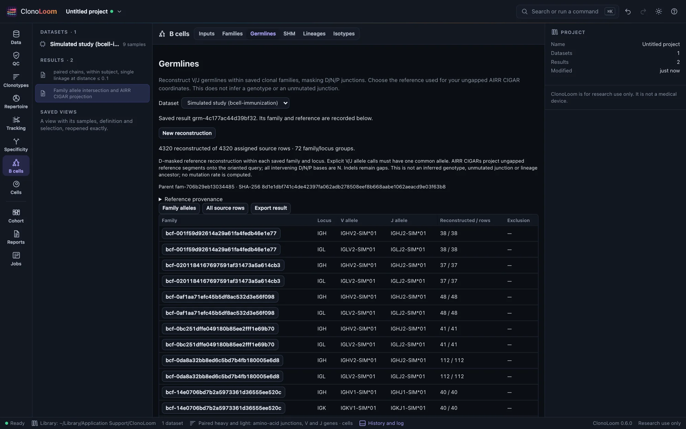
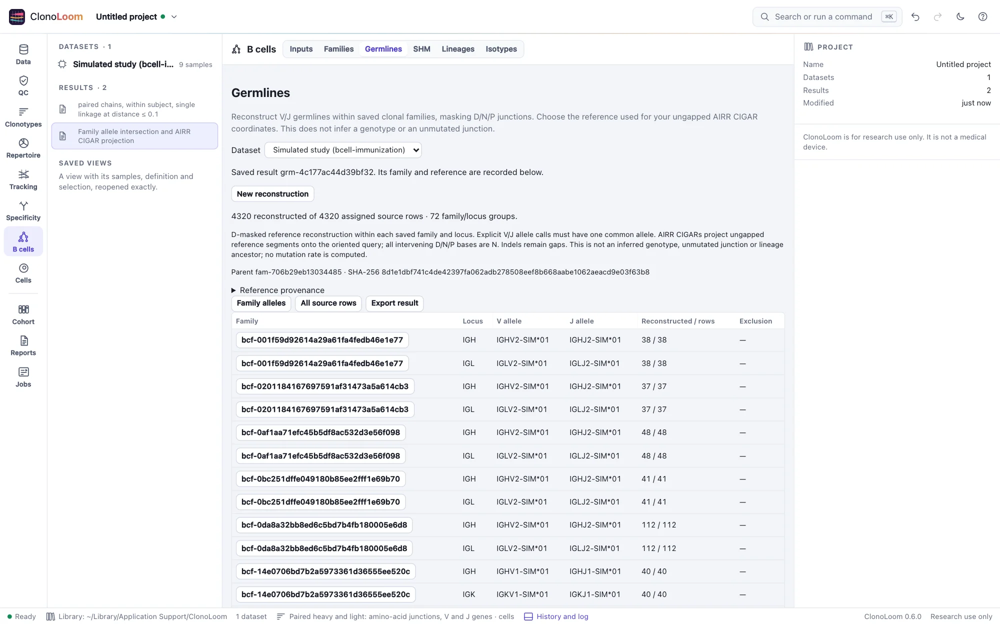

B-cell germlines
B cells → Germlines reconstructs reference projections for assigned family members and reports unsupported evidence explicitly.
Choose families and a reference


First save a Families result with an explicit threshold. Open B cells → Germlines, select that saved result, choose the reference, and select Reconstruct germlines. Membership comes from the saved families and their recorded filter; changing the current QC filter does not change that membership.
For human data, download Human IG germline segments (OGRDB, 27 May 2026) in Reference data. The catalog pins IGH release 10, IGK release 5 and IGL release 4 by file size and SHA-256. These CC0 data are downloaded only on request. The artificial immunization option uses the default v2 example reference (seed 20261027). Custom-seed studies export their own reference FASTA, but custom reference selection is outside this slice. Keep older v1 source files for saved results; generate v2 in a fresh folder to obtain the new evidence.
Evidence the method needs
Each assigned source row needs explicit V/J allele calls, an ungapped IUPAC nucleotide sequence, a valid rev_comp flag, and V/J AIRR CIGARs against the selected ungapped reference. Supplied query and germline endpoints must agree with the CIGAR. Coordinates follow the oriented query, so reverse-complemented raw queries are handled once. The supplied germline_alignment is retained input evidence, not the reconstruction's authority.
Within each family and locus, the intersection of member allele calls must resolve to one V and one J allele present in the reference. Conflicting calls, unresolved ties, gene-only calls and absent alleles are exclusions. A highly abundant row does not override a conflict. No genotype, allele substitution or alignment is inferred.
Use a reference whose segment boundaries match the annotation. Names and CIGAR lengths alone cannot establish that the selected reference was used by the annotation tool. Gapped IMGT numbering, missing CIGARs, native IMGT input and gene-only Cell Ranger calls are unsupported for reconstruction in this slice. Their source evidence and family results remain available.
What is reconstructed
V and J reference bases are projected through the CIGAR. Insertions and deletions remain gaps. Every query base between the V and J spans is masked as N: D plus N/P sequence in heavy chains, and the intervening junction in light chains. Query ambiguity and reference ambiguity remain explicit. This is not the full unmutated rearrangement or an inferred lineage ancestor.
Family members can cover different spans. The family records common allele choices; each source row keeps its own projected query, D-masked germline, segment labels and per-column coordinates. These alignments are not IMGT numbered. Coordinates are 1-based on the oriented query and separately on each ungapped reference segment; zero marks an absent mapping at gaps or masked junction reference positions.
Inspect and export
Select a family/locus to inspect its rows, then select a sequence to view its alignment and source identity. Summary counts refer to source rows, including duplicate retained contigs, not cells or abundance. Exclusion reasons are separate from successful reconstructions. Pages are bounded; the complete result is retained.
Export result includes every row and exclusion in CSV, successful D-masked projections in FASTA, and complete JSON with coordinate maps, reference provenance and the parent family checksum. The manifest records dataset, family and reference dependencies. Saved results reopen without downloading the reference again. A resumed computation refuses changed family or reference bytes.
Queries and reference segments are limited to 10,000 bases; a result is limited to 50 million alignment columns. Exceeding a limit fails explicitly. Somatic hypermutation compares these saved projections in a separate result. Lineage trees use a shared V/J panel in another saved result.
Sources and validation
D masking follows the published Change-O framework, Gupta et al. (2015), with coordinate semantics from AIRR Rearrangement schema 2.0. The strict family allele intersection is a ClonoLoom policy, not a reproduction of Change-O's clone consensus. Reference data are described in AIRR-C IG Reference Sets.
Independent CSV/FASTA slicing checks every artificial projection and coordinate map against known ancestors outside the masked junction. Hand-calculated tests cover orientation, offsets, insertions, deletions, ambiguity and invalid bounds. Public AIRR files test format coverage; they do not establish biological germline truth.